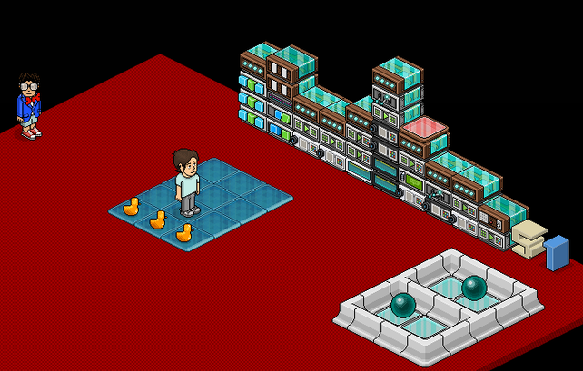
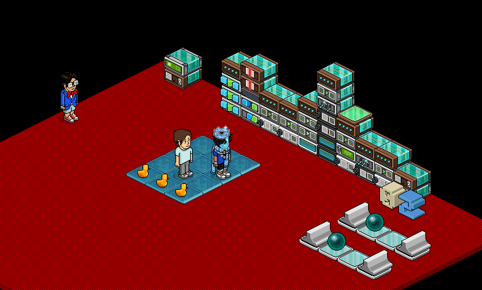

|
|
|
Last Man
Entwickelt von: surab1996
Neue und zugleich verbesserte Methode für die Berechnung des letzten Users in einem Spiel.
Die "Last Man" Einstellungen waren bisher immer relativ Buganfällig. Durch ein Gleichzeitigkeitsproblem, welches manchmal Effekte doppelt ausführt, entstanden falsche Berechnungen. So wurden Leuchtbälle zweifach bewegt oder Farbfliesen doppelt umgeschalten. Um das zu verhindern wird der Weg der Leuchtbälle verkürzt, sodass sie sich immer Höchstens ein Feld fort bewegen können.
Die "Last Man" Einstellungen waren bisher immer relativ Buganfällig. Durch ein Gleichzeitigkeitsproblem, welches manchmal Effekte doppelt ausführt, entstanden falsche Berechnungen. So wurden Leuchtbälle zweifach bewegt oder Farbfliesen doppelt umgeschalten. Um das zu verhindern wird der Weg der Leuchtbälle verkürzt, sodass sie sich immer Höchstens ein Feld fort bewegen können.

Vollständiger Aufbau eines "Last Man" Systems
Das Prinzip ist sehr spektakulär. Befinden sich 2 oder mehr User im Spielfeld, bewegen sich die Leuchtbälle parallel zueinander fort. Ist jedoch nur noch einer übrig, ändert sich die Bewegung der Leuchtbälle fast blitzartig, nachdem der 2. User verschwunden war, dann asynchron fort. Die Anzahl der diagonalen-Positionen werden gezählt. Kommt eine signifikante Anzahl zusammen, wird dies als "letzter User" detektiert. Es können aber immer noch Fehler auftreten. Unvorhergesehene Einflüsse, die nach einer ungewissen Zeit auftreten können, würden die Leuchtbälle in falsche Positionen bringen, die dann trotzdem dazugezählt werden würden. Daher wird ein Zeitlimit von jeweils 2 Sekunden gesetzt.
Jedes Mal, wenn der Counter eine Zahl dazu addiert, muss die nächste Zahl innerhalb von 2 Sekunden dazu addiert werden oder anders gesagt, wenn die diagonalen-Positionen zu selten auftreten, wird der Counter zurückgesetzt und das Zählen beginnt von neu. Trotzdem ist diese Methode sehr schnell. Die Erkennung von einem User dauert nur 2,5 Sekunden. Es wäre nicht anzuzweifeln, dass diese Dauer sogar noch zu übertreffen ist. Nach aktueller Forschung würde das aber die Genauigkeit und Präzision verschlechtern.
Das Last Man System könnte neue Möglichkeiten für vollautomatische Games schaffen, die bisher weniger oder nur schwierig zu realisieren waren. Bekannte Games wie DTTF oder Lass dich nicht fangen können damit optimiert werden. Außerdem werden Wired-Kosten gespart, denn in diesem System muss nicht für jede 1 mal 1 Bodenfläche etwas eingestellt werden.

Last Man System im Einsatz
Einstellungs-Info
Richtung ändern statt Angriff: Kollision muss durch den Richtung ändern Effekt erzeugt werden. Der Angriff Effekt ist nämlich davon abhängig, wo ein User steht. Wenn z. B. 2 User Diagonal nebeneinander stehen, muss sich ein Freeze Boden entscheiden mit welchen User er kollidieren soll. Bei bestimmten Stellen kann es also leider passieren, dass ein User keine Kollision abbekommt. Um dies zu vermeiden legt man für jeden Boden eine "Kollisionsrichtung" fest.
Gleichzeitiges Kollidieren: Wenn 2 User zur gleichen Zeit kollidieren, würde bei einem normalen Kollisions-Stapel nur ein User von beiden auslösen. Wenn aber im Stapel 2 mal Kollision eingebaut wird, werden beide User fast zeitgleich aufgenommen. Aber ein Wired Effekt alleine kann im Normalfall nur einmal pro 0,5 Sekunden ausgelöst werden, daher werden zwei Effekte eingebaut und das Extra Wired "unbenutzter Effekt". Das Extra Wired sorgt dafür, dass jeder Auslöser einen freien (unbenutzten) Effekt auslösen kann und damit ermöglicht dieser, dass bei einer gleichzeitigen Kollision auch 2 Effekte gleichzeitig ausgelöst werden. Mit gleichzeitig ist natürlich keine absolute Gleichzeitigkeit gemeint, sondern Dinge, die in einem Zeitbereich von unter 0,5 Sekunden passieren.
Doppelte Absicherung: Im GIF oben ist in der Einstellung ein doppelter Schutz eingebaut. Eigentlich würde dies auch mit einem Schutz allein schon gut funktionieren, aber die Vergangenheit hat gezeigt, wie Buganfällig Last Man Einstellungen manchmal sein können, daher wurde eine zusätzliche Sicherung installiert. Es wurden verschiedene Tests durchgeführt: Nur die 1. Absicherung, nur die 2. Absicherung und beide Absicherungen zusammen. In keinem Fall konnte eine Fehldetektion festgestellt werden. Wichtig ist nur, dass mindestens eine von beiden drin ist. Die Absicherung bezieht sich darauf, dass der weiße Nr.-Block auf 0 gesetzt wird, wenn ein Fehler auftreten würde.
Gleichzeitiges Kollidieren: Wenn 2 User zur gleichen Zeit kollidieren, würde bei einem normalen Kollisions-Stapel nur ein User von beiden auslösen. Wenn aber im Stapel 2 mal Kollision eingebaut wird, werden beide User fast zeitgleich aufgenommen. Aber ein Wired Effekt alleine kann im Normalfall nur einmal pro 0,5 Sekunden ausgelöst werden, daher werden zwei Effekte eingebaut und das Extra Wired "unbenutzter Effekt". Das Extra Wired sorgt dafür, dass jeder Auslöser einen freien (unbenutzten) Effekt auslösen kann und damit ermöglicht dieser, dass bei einer gleichzeitigen Kollision auch 2 Effekte gleichzeitig ausgelöst werden. Mit gleichzeitig ist natürlich keine absolute Gleichzeitigkeit gemeint, sondern Dinge, die in einem Zeitbereich von unter 0,5 Sekunden passieren.
Doppelte Absicherung: Im GIF oben ist in der Einstellung ein doppelter Schutz eingebaut. Eigentlich würde dies auch mit einem Schutz allein schon gut funktionieren, aber die Vergangenheit hat gezeigt, wie Buganfällig Last Man Einstellungen manchmal sein können, daher wurde eine zusätzliche Sicherung installiert. Es wurden verschiedene Tests durchgeführt: Nur die 1. Absicherung, nur die 2. Absicherung und beide Absicherungen zusammen. In keinem Fall konnte eine Fehldetektion festgestellt werden. Wichtig ist nur, dass mindestens eine von beiden drin ist. Die Absicherung bezieht sich darauf, dass der weiße Nr.-Block auf 0 gesetzt wird, wenn ein Fehler auftreten würde.